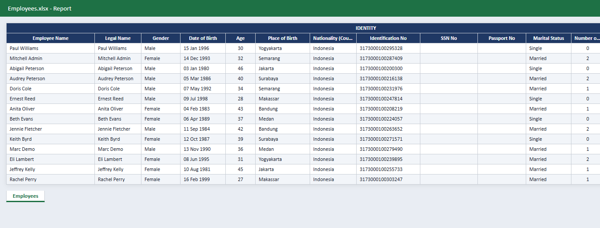
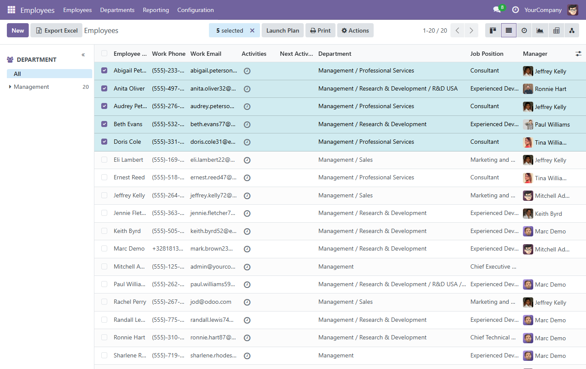
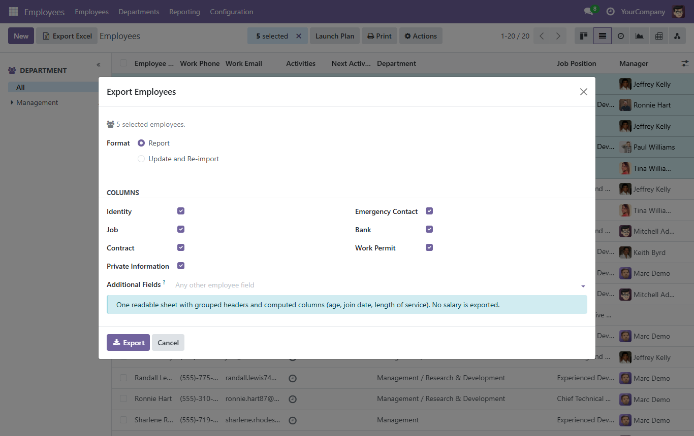
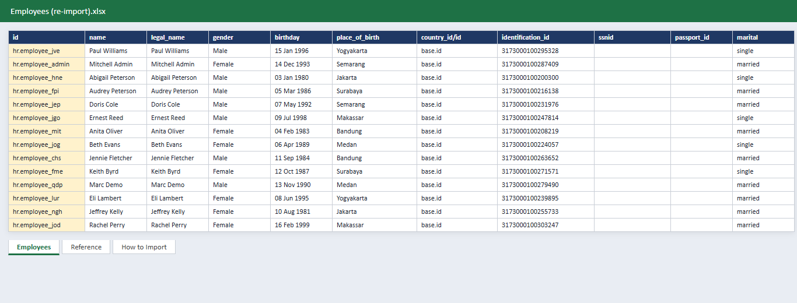

FOR ODOO 18 - COMMUNITY AND ENTERPRISE
One button on the employee list gives a complete, readable Excel report, or a file you can change in Excel and import back to update many employees at once.
Free Open source - LGPL-3 No salary exported

The report: grouped headers, readable values, age and length of service
Identity, job, contract, private information, emergency contact, bank and work permit, in one sheet with grouped headers, filters and frozen names.
Age, join date and length of service are calculated for you. Selections and relations are written as readable names, not codes.
Switch the groups of columns on or off and add any other employee field, including the fields of your own modules.
The re-import format uses external IDs: the standard Import of Odoo updates the same employees instead of creating new ones.
Departments, job positions, managers and the other relations are listed with their external ID next to their name, so changes stay easy.
No salary is exported, each user only gets the fields he can read, and only the user who prepared an export can download it.
Select employees, or none for all the employees of the current companies, and click Export Excel.


Report or re-import, the groups of columns you need, any additional field, archived employees or not.
The re-import file keeps the external ID of each employee and of each relation. Change the values in Excel, then use Import records on the employee list.

NexaCore Solution builds HR applications for Odoo.
halo@nexacoresolution.id